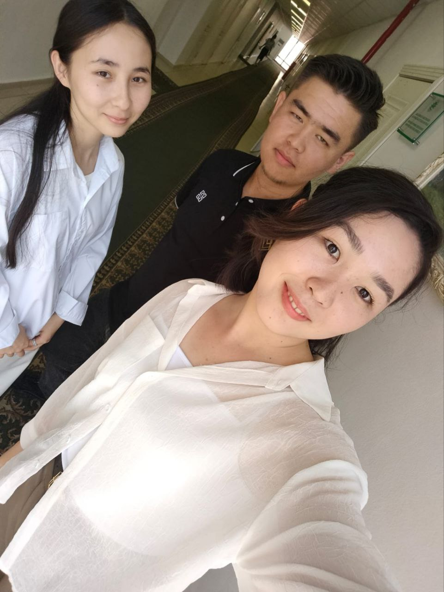
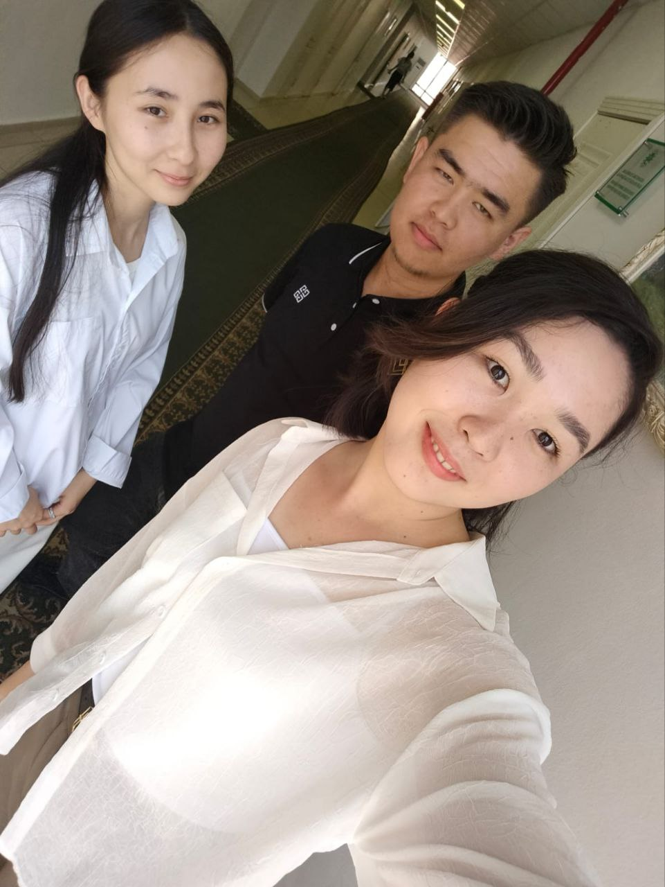

Достар
 
 Достар-бұл біздің өмірімізге қуаныш пен жарық әкелетін ерекше адамдар.
"Достар-бұл өмірді үйлесімді және шабыттандыратын әуен."
"Достарыңызбен тіпті ең қарапайым сәт мерекеге айналады."
"Достар-бұл материалдық құндылықтармен өлшенбейтін Қазына."
"Достар-бұл біз өзіміздің ең жақсы нұсқаларымызды көретін айна."
"Достарыңызбен кез-келген дауылдан өтіп, олардың әрқашан бар екенін білуге болады."
"Достық-бұл ешқашан сөнбейтін және ешқашан жойылмайтын сыйлық."
"Достар әрқашан қолдайтынын біле отырып, күлкі, көз жасы және ең терең құпияларды бөлісе алады."
"Достар - бұл біздің өміріміздің жолындағы асыл тастар, бұл оны жарқын және құнды етеді."
Достық - өмірдегі ең маңызды байлықтардың бірі және достар туралы сөздер бізге әрқашан осы құндылықты еске салады.
Менің достарым өте көп. Менің мектеп кезінен бергі келе жатқан досымның есімі Ерболат. Ол екеуміз мектеп қабырғасынан бері жақын достармыз. Мен жоғарғы оқу орнына түскелі көп достар таптым. Олар Жансерік, Жасурбек, Санжар, Дінасыл және Алпамыс. Және де мен Жоғарғы оқу арқылы қыз балалармен де жақсы достаса алдым. Олар Меруерт және Алина. Ол екеуімен мен жақын дос бола алдым. Біз әрқашан бірге жүріп, сабақтарымызды бірге орындаймыз. Олармен әрдайым көңілді.